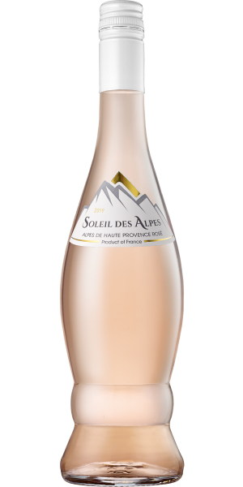

Soleil des Alpes - Famille Ravoire - Provence

Soleil Des Alpes significa
"Sol dos Alpes"
O nome do vinho vem do local ensolarado no sul da França, no sopé dos Alpes, onde os vinhedos são plantados. É um local entre os rios Durance e Ubaye, que possui paisagem e clima diversificados.
As uvas são colhidas de manhã cedo e imediatamente prensadas. Segue-se uma fermentação a temperaturas muito baixas (dura 10-15 dias) de forma a preservar a expressão aromática do vinho.
O Rosé resultante é uma mistura de Grenache 65%, Syrah 20% e Cinsault 15%. Apresenta uma cor rosa pálido e um aroma com aromas de frutos vermelhos e um toque de flores.
Paladar agradavelmente complexo com uma clara harmonia entre frescura e mineralidade no final.